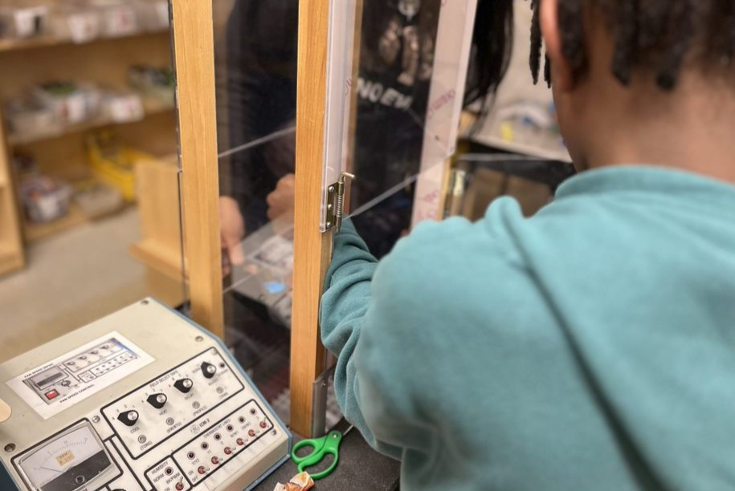
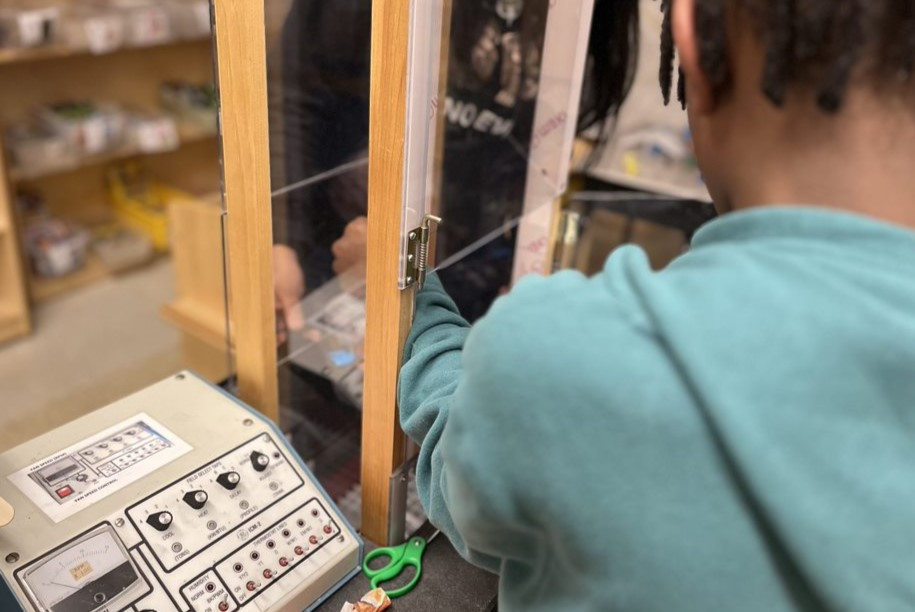

Description
Would your students be excited about interacting with a roaring blast of wind? In this workshop, students will learn about air resistance while building hovercrafts that sink, float, or fly out of the top of the wind tunnel! They’ll practice being engineers by experimenting with weights and surface area to build their hovercrafts, as well as recording their variables, graphing their results, and making hypotheses (guesses).
Materials + Preparation
This workshop requires a wind tunnel, which can be made with a strong fan, cardboard, and duct tape. The Teacher's Guide discusses optimal materials, including instructions to 3D-print parts for the hovercraft experimentation. Lower-fi materials can be used, however.
This workshop has been wildly popular with students at a variety of locations, ranging from elementary school through high school. For younger elementary students, we suggest framing the challenge as iterating on hovercraft designs until they get a version that sinks, a version that floats, and a version that sinks. For older high school students, we recommend focusing on the hardest challenge, which is to create a hovercraft that floats. To increase difficulty, limit the number of trials to achieve the elusive float!
This poster gives more information on this workshop and the pedagogies used to develop it.

 
